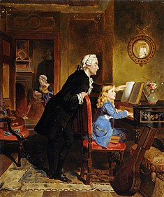
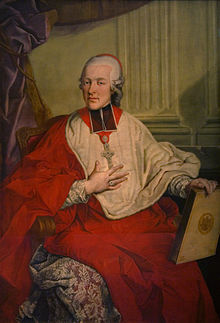

- Ранние годы (1756—1763)
- Большое путешествие (1763—1766)
- Первые оперы
- Венский период (1781—1791)
- Личность Моцарта

Детство и семья
Вольфганг Амадей Моцарт родился 27 января 1756 года в Зальцбурге, бывшем тогда столицей Зальцбургского архиепископства, в доме по адресу Гетрайдегассе, 9. Его отец Леопольд Моцарт был скрипачом и композитором в придворной капелле князя-архиепископа зальцбургского, графа Сигизмунда фон Штраттенбаха. Мать — Анна Мария Моцарт (урождённая Пертль), дочь комиссара-попечителя богадельни в Санкт-Гильгене. Из семерых детей от брака Моцартов выжили только двое: дочь Мария Анна, которую друзья и родственники звали Наннерль, и сын Вольфганг. Его рождение едва не стоило матери жизни. Лишь спустя некоторое время она смогла избавиться от слабости, внушавшей опасение за её жизнь. На второй день после рождения Вольфганг был крещён в Зальцбургском соборе Святого Руперта. Запись в книге крещений даёт его имя на латыни как Johannes Chrysostomus Wolfgangus Theophilus Mozart. Первые две составляющие полного имени — имя святого Иоанна Златоуста — в повседневной жизни не использовались. Четвёртая составляющая имени (Theophilus) имеет греческое происхождение и означает «возлюбленный Богом». Это имя Моцарта в течение его жизни переводилось на другие языки: нем. Gottlieb [К 2], лат. Amadeus, итал. Amadeo. Сам Моцарт предпочитал, чтобы его называли третьим именем: Вольфганг[3].
Музыкальные способности обоих детей проявились в очень раннем возрасте. В семь лет Наннерль стала получать от отца уроки игры на клавесине. Эти уроки оказали огромное воздействие на маленького Вольфганга, которому было около трёх лет: он садился за инструмент и мог подолгу развлекаться подбором созвучий. Кроме того, он запоминал отдельные места музыкальных пьес, которые слышал, и мог проиграть их на клавесине. Это произвело большое впечатление на отца, Леопольда. В четыре года отец начал разучивать с ним на клавесине небольшие пьесы и менуэты. Почти сразу же Вольфганг хорошо научился их играть. Вскоре у него возникло стремление к самостоятельному творчеству: уже в пять лет он сочинял маленькие пьесы, которые отец записывал на бумаге. Самыми первыми сочинениями Вольфганга стали Анданте До мажор (K.1a) и Аллегро До мажор (K.1b) для клавира, которые были сочинены между концом января и апрелем 1761 года[4].
Леопольд завёл для своих детей нотные тетради, в которые он сам или его друзья-музыканты записывали различные сочинения для клавира. Нотная тетрадь Наннерль содержит менуэты и подобные им небольшие пьесы. К настоящему времени тетрадь сохранилась в сильно повреждённом и неполном виде. По этой тетради учился и маленький Вольфганг, в ней же записаны его первые сочинения. Нотная тетрадь самого Вольфганга, напротив, сохранилась полностью. В ней встречаются сочинения Телемана, Баха, Киркгофа и многих других композиторов. Музыкальные способности Вольфганга были удивительны: в шесть лет он, помимо клавесина, практически самостоятельно выучился играть на скрипке[5]. Отец был для сына лучшим преподавателем и воспитателем: он дал своим детям прекрасное домашнее образование; они никогда в жизни не ходили в школу. Мальчик всегда настолько отдавался тому, чему его заставляли учиться, что забывал обо всём, даже о музыке. Например, когда учился считать, то стулья, стены и даже пол были покрыты цифрами, написанными мелом[4].
После перерыва в несколько месяцев Леопольд решил продолжить концертную деятельность с детьми. Целью новой поездки был выбран Париж — один из крупнейших музыкальных центров Европы того времени. Покровитель Леопольда, князь-архиепископ зальцбургский Сигизмунд фон Шраттенбах поддержал амбициозный проект своего подчинённого, и дал ему отпуск. Но он не ожидал, что Леопольд будет отсутствовать больше трёх лет[11]. Семья выехала из Зальцбурга 9 июля 1763 года. Посетив по пути множество городов и княжеских дворов Германии, в которых Моцарты также давали концерты, они прибыли в Париж только 18 ноября того же года. Слава о детях-виртуозах быстро распространялась, и, благодаря этому, желание знатных особ послушать игру Вольфганга было велико[12]. Париж произвёл на Моцартов большое впечатление. В январе Вольфганг написал свои первые четыре сонаты для клавесина и скрипки, которые Леопольд отдал в печать[13]. Он считал, что сонаты произведут большую сенсацию: на титульном листе было указано, что это сочинения семилетнего ребёнка. Концерты, которые давали Моцарты, вызывали большой ажиотаж. Благодаря полученному в Франкфурте рекомендательному письму, Леопольд и его семья были взяты под покровительство немецкого энциклопедиста и дипломата, Фридриха Мельхиора фон Гримма, имевшего большие связи. Именно благодаря усилиям Гримма Моцартов пригласили выступить при дворе короля Людовика XV в Версале. 24 декабря, в рождественский сочельник, они прибыли во дворец и провели там две недели, давая концерты перед королём и маркизой де Помпадур. На новый год Моцартам даже было позволено присутствовать на торжественном пиршестве, что считалось особой честью — они должны были стоять у стола, рядом с королём и королевой[13][14].
В Париже Вольфганг и Наннерль достигли удивительных высот в исполнительском мастерстве — Наннерль равнялась с ведущими парижскими виртуозами, а Вольфганг, кроме своих феноменальных способностей пианиста, скрипача и органиста, поражал публику искусством аккомпанемента экспромтом к вокальной арии, импровизацией и игрой с листа[15]. В апреле, после двух больших концертов, Леопольд решил продолжить путешествие и посетить Лондон. Благодаря тому, что в Париже Моцарты дали много концертов, они неплохо заработали, кроме того, им дарили разные драгоценные подарки — эмалевые табакерки, часы, украшения и прочие безделушки[13].
И действительно, приехав в Англию как виртуоз, Вольфганг уезжал из неё уже как композитор[22]: в Лондоне у него вновь просыпается стремление к творчеству, однако он пишет не только произведения для клавесина и скрипки, но даже вокальную и симфоническую музыку[23]. Этому способствовал случай: в июле Леопольд тяжело заболел, и для того, чтобы содержать его в покое, в августе семья переехала в дом в сельской местности в Челси. Вольфгангу было запрещено играть на клавире, чтобы не тревожить отца. Не имея возможности заниматься игрой на инструменте, Вольфганг проводил больше времени за сочинением музыки. Это позволило ему создать свою первую в жизни симфонию (K.16, Ми-бемоль мажор)[24]. Таким образом, техническая подготовка Вольфганга продвинулась настолько, что он свободно владел правилами и формами композиции. Однако мнение о том, что Вольфганг уже достиг вершины композиторского мастерства, не совсем верно: в некоторых случаях Леопольд редактировал сочинения своего сына и наводил в них порядок. 19 июля 1765 года, в конце своего более чем годичного пребывания в Англии, Моцарты посетили Британский музей[25]. 26 июля 1765 года Моцарты покинули Лондон, и, уступая настойчивым просьбам голландского посла, выражавшего желание принцессы послушать игру вундеркиндов, решили отправиться в Гаагу. Это не входило в первоначальные планы Леопольда, которому пришлось отказаться от намерения заехать в Италию перед возвращением домой[26]. Выехав из Дувра первого августа, они по морю достигли Кале и добрались до Гааги только через месяц, 11 сентября 1765 года. В Голландии, где Моцарты провели девять месяцев, Вольфганг написал ещё одну симфонию (K.22, Си-бемоль мажор) и шесть сонат для клавесина и скрипки. В сентябре Вольфганг играл перед королевским двором в Гааге. Там же были исполнены его первые симфонии. Поездка в Голландию чуть не оказалась для Моцартов роковой: Леопольд снова был болен, потом заболели и дети; Наннерль заболела на следующий день после прибытия в Гаагу и чуть не умерла — у неё начался брюшной тиф, а вскоре после её выздоровления тифом заболел Вольфганг. Он был на грани смерти почти два месяца, и за время болезни похудел до костей[27]. Леопольду в Голландии выпала большая честь: его книгу «Школа скрипичной игры» перевели на голландский язык и издали[28]. В апреле 1766 года, спустя более чем через три года после начала путешествия, семейство Моцартов отправилось домой. Отпуск Леопольда был сильно просрочен, к тому же частые болезни детей свидетельствовали об их серьёзном переутомлении: дети нуждались в отдыхе[29]. 10 мая они прибыли в Париж, где их старый друг Ф. М. фон Гримм уже подготовил для них квартиру. Гримм отмечал, что с момента своего пребывания в Париже в 1764 году, Вольфганг и Наннерль достигли необычайных успехов в музыке. Однако публика, больше ценившая «чудо-детей», стала равнодушна к уже изрядно подросшим вундеркиндам. Тем не менее, благодаря стараниям Гримма детей снова позвали играть при дворе в Версале[30]. Через два месяца, 9 июля, семья покинула Париж и направилась домой, в Зальцбург. По пути они останавливались с концертами в Лионе, Женеве и Мюнхене, проводя в каждом городе по несколько недель. В конце ноября 1766 года семья вернулась домой в Зальцбург[31].
Результаты путешествия превзошли все ожидания: оно принесло Леопольду и детям огромный успех, о котором они и не могли мечтать[32]. За три года отсутствия Вольфганг из обычного ребёнка превратился в десятилетнего композитора, что потрясло друзей и соседей Моцартов. Доподлинно неизвестно, посещал ли Вольфганг школу в Зальцбурге, однако не исключено, что Леопольд сам обучал своих детей: под его руководством Вольфганг занимался чтением, письмом и арифметикой, историей и географией. Особое внимание уделялось изучению иностранных языков — Вольфганг изучал латынь, итальянский, на котором он в дальнейшем свободно писал и говорил, а также французский и, вероятно, немного английский[33][34]. Долгое время считалось, что в Зальцбурге Леопольд также занимался с сыном изучением контрапункта, о чём говорила сохранившаяся нотная тетрадь, однако позже было установлено, что на самом деле эта тетрадь относится к венскому периоду и содержит уроки взрослого Вольфганга с каким-то его неизвестным учеником[35].
 Вскоре после возвращения из Англии Вольфганга, уже как композитора, привлекли к сочинению музыки: к годовщине принятия князем-архиепископом зальцбургским С. фон Штраттенбахом духовного сана, Вольфганг сочинил хвалебную музыку («A Berenice … Sol nascente», также известную как «Licenza», K.70/61c) в честь своего владыки. Исполнение, приуроченное непосредственно к торжеству, состоялось 21 декабря 1766 года. Кроме того, для нужд двора в разное время были сочинены также ныне утерянные различные марши, менуэты, дивертисменты, трио, фанфары для труб и литавр, и прочие «произведения на случай». С заказом архиепископского двора связано также и появление первого вокально-симфонического сочинения Вольфганга — немецкой оратории «Долг первой заповеди». Моцарт написал лишь первую часть оратории, вторая и третья части были написаны Михаэлем Гайдном и Антоном Адльгассером соответственно. С сочинением этой оратории связана легенда — будто бы архиепископ Штраттенбах, желая убедиться в чудесном даре Вольфганга, повелел запереть его на неделю у себя, чтобы тот никого не мог видеть. В этом заточении Вольфганг должен был написать ораторию на стихи, данные ему архиепископом[36]. Однако, учитывая большой объём партитуры — 208 страниц, и некоторое количество нотного текста, написанного поочерёдно то Вольфгангом, то Леопольдом Моцартом, это крайне сомнительно. Так или иначе, исполнение первой части оратории, сочинённой Моцартом, состоялось 12 марта 1767 года[37]. В мае 1767 года состоялась премьера первой музыкальной драмы Вольфганга — оперы на латинском языке, ныне известной как «Аполлон и Гиацинт», написанной в качестве музыкальной интермедии, согласно традиции, для исполнения студентами зальцбургского университета в университетском театре[38][39]. Осенью 1767 года должно было состояться бракосочетание дочери императрицы Марии Терезии — юной эрцгерцогини Марии Йозефы с королём Неаполя Фердинандом. Это событие стало поводом очередной гастрольной поездки Моцартов в Вену. Леопольд надеялся, что собравшиеся в столице доблестные гости по достоинству смогут оценить игру его детей-вундеркиндов. Однако по прибытии в Вену Моцартам сразу не повезло: эрцгерцогиня заболела оспой и умерла 15 октября. Из-за смятения и растерянности, царившей в придворных кругах, не появилось ни единой возможности выступить. Моцарты помышляли об отъезде из поражённого эпидемией города, однако их удерживала надежда на то, что они, несмотря на траур, будут приглашены ко двору. В конце концов, оберегая детей от болезни, Леопольд с семьёй бежал в Оломоуц, однако Вольфганг, а потом и Наннерль успели заразиться и заболели так тяжело, что Вольфганг на девять дней потерял зрение. Вернувшись в Вену 10 января 1768 года, когда дети поправились, Моцарты, сами того не ожидая, получили от императрицы приглашение ко двору[40][41]
1770—1774 годы Моцарт провёл в Италии. В 1770 году в Болонье он познакомился с исключительно популярным в то время в Италии композитором Йозефом Мысливечеком; влияние «Божественного Богемца» оказалось столь велико, что впоследствии, по сходству стиля, некоторые его сочинения приписывали Моцарту, в том числе ораторию «Авраам и Исаак».
В 1771 году в Милане, опять же при противодействии театральных импресарио, всё же была поставлена опера Моцарта «Митридат, царь Понтийский» (итал. Mitridate, Re di Ponto), которая была принята публикой с большим энтузиазмом. С таким же успехом была дана и вторая его опера «Луций Сулла» (итал. Lucio Silla) (1772 год). Для Зальцбурга Моцарт написал «Сон Сципиона» (итал. Il sogno di Scipione), по поводу избрания нового архиепископа, 1772 год, для Мюнхена — оперу «La bella finta Giardiniera», 2 мессы, офферторий (1774 год). Когда ему минуло 17 лет, среди его произведений насчитывались уже четыре оперы, несколько духовных сочинений, 13 симфоний, 24 сонаты, не говоря о массе более мелких композиций. В 1775—1780 годах, несмотря на заботы о материальном обеспечении, бесплодную поездку в Мюнхен, Мангейм и Париж, потерю матери, Моцарт написал, среди прочего, 6 клавирных сонат, несколько скрипичных сонат и фортепианных концертов, концерт для гобоя с оркестром, два концерта и Andante для флейты с оркестром, Концерт для флейты и арфы, три квартета для флейты, скрипки, альта и виолончели, большую симфонию № 31 D-dur, прозванную Парижской, несколько духовных хоров, 12 балетных номеров.
Разрыв с архиепископом
 Пока Моцарт в Мюнхене получал поздравления, его работодатель, архиепископ Зальцбургский, посещал торжественные мероприятия по поводу коронации и вступления на австрийский престол императора Иосифа II. Моцарт решил воспользоваться отсутствием архиепископа и задержался в Мюнхене дольше положенного. Узнав об этом, Коллоредо приказал Моцарту срочно прибыть в Вену. Там композитор сразу понял, что попал в немилость. Получив в Мюнхене много лестных отзывов, ласкающих его самолюбие, Моцарт был оскорблён, когда архиепископ обращался с ним, как со слугой, и даже распорядился, чтобы тот во время обеда сидел рядом с камердинерами. Как отмечает Соломон, Моцарт, возможно, уже решился оставить службу у архиепископа, и только искал подходящий предлог, чтобы оправдать своё решение: ему нужно было убедить своего отца и даже самого себя, что такой шаг был защитой своей чести, а не личных интересов. Архиепископ Коллоредо действительно был скупым, несправедливым и невежественным правителем, он не только запрещал Моцарту проводить выступления ради собственной выгоды, но и всячески ограничивал Моцарту доступ в дома знатных особ — потенциальных покровителей Моцарта[источник не указан 2303 дня]. В итоге, ссора достигла своего апогея в мае: Моцарт подал прошение об отставке, однако архиепископ отказался его принять. Тогда музыкант стал вести себя подчёркнуто вызывающе, надеясь таким способом получить свободу. И он добился своего: в следующем месяце композитор был уволен буквально пинком под зад дворецким архиепископа, графом Арко[45]. При этом Карл Арко предостерёг молодого композитора относительно Вены — его слова Моцарт передаёт в одном из писем отцу: «Поверьте мне, вы слишком ослеплены. Слава здесь коротка; вначале слышишь одни комплименты и много зарабатываешь, всё это правда; но как долго? Проходит всего несколько месяцев, и венцам опять хочется чего-нибудь новенького»[46]. Но Моцарт согласился с Арко лишь отчасти: «…Венцы, действительно, легко разочаровываются, но это относится только к театру, а моя профессия пользуется слишком большой любовью, чтобы я не сумел удержаться. Здесь настоящее царство клавирной музыки. Допустим даже, что так и случится. Но ведь случится-то только через несколько лет, уж конечно никак не раньше. А тем временем мы завоюем славу и составим себе состояние»
Первые шаги в Вене
Моцарт прибыл в Вену 16 марта 1781 года. Уже в мае он снял комнату на площади святого Петра, в доме Веберов, переехавших в Вену из Мюнхена. Друг Моцарта и отец Алоизии Фридолин Вебер к тому времени скончался, а Алоизия вышла замуж за актёра Йозефа Ланге[en], и так как в это время она была приглашена в венский национальный зингшпиль, то её мать фрау Вебер также решилась переехать в Вену с тремя незамужними дочерьми Йозефой, Констанцией и Софи. Сложное положение заставило её заняться сдачей комнат внаём, и Моцарт был рад возможности найти пристанище у старых знакомых. Вскоре до Зальцбурга дошли слухи, будто бы Вольфганг собирается жениться на одной из дочерей. Леопольд был в страшном гневе; он упорно настаивал на том, чтобы Вольфганг сменил квартиру, и получил следующий ответ[47]:
ещё раз повторяю, что я давно уже намеревался снять другую квартиру, и только из-за людской
болтовни;
жаль, что я вынужден это сделать из-за нелепых сплетен, в которых нет ни слова правды. Я хотел бы
всё-таки знать, что это за люди, которые могут радоваться тому, что средь бела дня болтают такое, не
имея на то никаких оснований. Коли я квартирую у них, то женюсь на дочери! […] Я не хочу так же
сказать,
что в семье я также неприступен с мадемуазель, с которой меня уже сосватали, и совсем не
разговариваю с
ней, но я и не влюблён; я дурачусь и шучу с нею, если время мне это дозволяет (но лишь по вечерам и
если
ужинаю дома, потому что по утрам я пишу в своей комнате, а после обеда редко бываю дома), — вот так
и
ничего больше. Если бы я должен был жениться на всех, с кем я шучу, то легко могло бы случиться, что
у
меня было бы 200 жён
Несмотря на то, что существует множество портретов Моцарта, получить представление о его внешности нелегко: количество подлинных портретов сравнительно мало. Наиболее точным отражением внешности Моцарта исследователи считают неоконченный портрет работы Йозефа Ланге[en], написанный в 1782 году, когда композитору было 26 лет. По воспоминаниям современников, Моцарт находился в постоянном движении: он то жестикулировал руками, то стучал ногой. Лицо его было чрезвычайно подвижно, постоянно менялось его выражение. Его свояченица Софи Хайбль вспоминала, что он постоянно играл «словно на клавире» с самыми разными предметами — шляпой, тростью, цепочкой от часов, столом, стульями[156]. Судя по подлинным портретам, Моцарт не обладал красивой или даже привлекательной внешностью: он был мал ростом, имел довольно густые русые волосы, цвет лица был бледный — результат многих болезней и нездорового образа жизни. Это же послужило причиной того, что его большие красивые голубые глаза имели рассеянный и тревожный, по воспоминаниям современников, взгляд. Широкий, но чересчур высокий лоб покато уходил назад, нос продолжал его линию, едва отделяясь от него небольшим углублением. Сам нос был довольно большим, что отмечалась современниками. Свои черты лица Моцарт, судя по портретам, унаследовал от матери[157] По мнению Германа Аберта, одной из характерных черт личности Моцарта была прирождённая наблюдательность в общении с людьми. Она заключалась в изумительной остроте и точности характеристик людей, с которыми Моцарт знакомился. Однако его суждения были лишены морализирующего пафоса, они содержали лишь радость наблюдения как такового и, прежде всего, стремление выявить в данном человеке существенное. Он не старался извлекать выгоды для себя, не завидовал личному благополучию. Прирождённое чувство собственного достоинства никогда не покидало его и в аристократических домах[158]. Судя по письмам и воспоминаниям современников, значительное место в жизни Моцарта занимали юмор и ирония. Свой лёгкий характер, а также склонность к грубой и порой вульгарной речи были присущи и его матери, которая любила всевозможные шутки и розыгрыши. Шутки Моцарта были довольно остроумны, особенно — если они касались окружающих его людей. В его письмах к родным в большом количестве встречаются туалетные шутки. По воспоминаниям Йозефа Ланге, окружению Моцарта приходилось выслушивать много пошлостей именно тогда, когда внутренне его занимало какое-либо крупное произведение[159]. Однако его шутки были вполне естественны: сознательно изображать из себя юмориста Моцарту никогда не приходило в голову. Кроме того, ему были свойственны гротескные рифмы и игра слов: он часто придумывал шуточные имена и фамилии для себя и своего ближайшего окружения. Так, например, себя он однажды назвал Трацом, поставив буквы своей фамилии в обратном порядке. Даже в книгу регистрации бракосочетаний собора Святого Стефана он вписал себя как Вольфганг Адам (вместо Амадей)[159] Ещё одной особенностью его личности была глубокая восприимчивость к дружбе. Герман Аберт считает, что этому способствовала его прирождённая сердечная доброта, готовность всегда прийти на помощь ближнему. Но вместе с тем он никогда не навязывался другим. Напротив, он обладал замечательной способностью (опять же, вытекавшей из его наблюдений за людьми) инстинктивно распознавать в каждом человеке, пытавшемся сблизиться с ним, те черты, которые присущи ему самому[
Увлечения
В силу своего непосредственного характера Моцарт больше всего любил находиться в весёлом обществе: он регулярно посещал различные балы, приёмы и маскарады, и даже сам устраивал их на собственной квартире. К тому же Моцарт был хорошим танцором, особенно красиво он танцевал менуэт[161]. Как и многие его современники, Моцарт играл в кегли[en], и особенно хорошо — в бильярд. У него в квартире был собственный бильярдный стол — роскошь для Вены того времени, на котором он часто играл с друзьями, или даже с женой. Друг Моцарта, тенор Майкл Келли вспоминал, что он часто играл с Моцартом в бильярд, но ни разу не выиграл у него ни одной партии[162].
Моцарт очень любил животных, особенно птиц — канареек и скворцов, которых он охотно держал у себя в качестве домашних животных[163]. Кроме того, в разное время он держал также собак и даже лошадей — в венские годы Моцарт совершал ежедневные прогулки верхом в пять утра, которые были рекомендованы его лечащим врачом